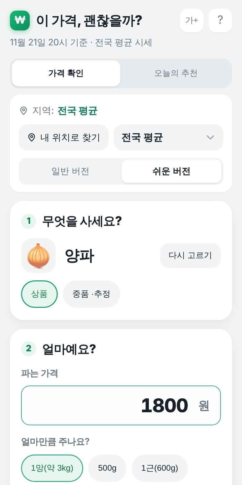
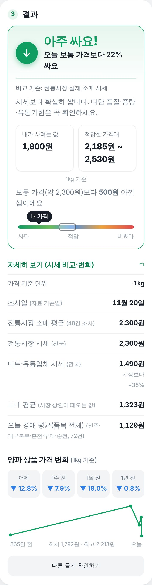
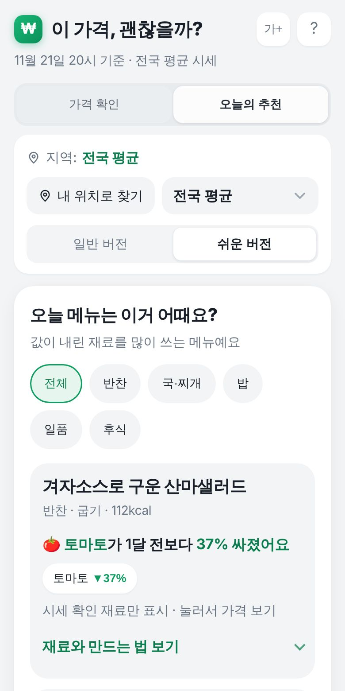

두 가지 화면 중 골라 쓰세요
앱 맨 위의 일반 버전 / 쉬운 버전 버튼으로 언제든 바꿀 수 있어요. 고른 버전은 기억해 둬요.
- 일반 버전 — 한 화면에 정보가 많이 보이고, 결과 아래 시세 비교·그래프가 바로 펼쳐져요.
- 쉬운 버전 — 글씨와 버튼이 크고, 한 단계씩 차근차근 보여 줘요. 결과는 한 문장으로 알려 줘요.

▲ 일반 버전 첫 화면

▲ 일반 버전 결과 화면 (시세 비교·그래프까지 한 번에)
아래 설명 그림은 쉬운 버전 기준이고, 일반 버전도 순서는 같아요. 쉬운 버전으로 바로 열려면 주소 끝에 ?v=easy 를 붙여 즐겨찾기 해 두세요.
1 무엇을 살지 고르세요

▲ 첫 화면
- 가격표 사진 찍기 — 초록색 큰 버튼을 누르고 가격표를 찍으면 품목·가격·무게를 자동으로 채워 줘요. (가격표를 밝고 정면에서 찍어 주세요.)
- 이름으로 찾기 — 칸에 "양파"처럼 입력해도 되고,
- 품목 카드의 가격은 보통 사는 단위로 보여 줘요. (예: 쌀 20kg, 배추 1포기, 파 1단) 작은 글씨는 1kg 가격이에요. "약"은 크기에 따라 무게가 달라서 대략이라는 뜻이에요.
- 고기·계란·우유도 있어요. 고기·우유 버튼에서 돼지고기(삼겹살·목심·앞다리·갈비), 쇠고기(한우 부위별·등급별, 수입), 닭고기, 계란(30구·10구), 우유를 찾을 수 있어요. 고기는 100g, 계란은 30구 가격으로 보여 줘요.
- 그림 버튼(자주 찾는 품목)을 눌러도 돼요. 채소·과일·생선 같은 분류 버튼을 누르면 그 분류 품목만 나와요.
2 가격과 양을 알려 주세요

▲ 양파를 골랐을 때
- 파는 가격 — 가격표에 적힌 금액을 숫자로 적어요. (예: 3000)
- 얼마만큼 주나요? — 500g, 1근, 1kg처럼 해당하는 버튼을 눌러요. 없으면 "직접 입력하기"를 눌러 적어요. (1근 = 600g)
- 어디서 사세요? — 전통시장이나 대형마트를 고르면, 그 곳에서 실제로 조사한 소매 가격과 비교해 드려요. 품목마다 마트가 더 싸기도 하고 더 비싸기도 해요. 온라인·편의점 등은 조사 자료가 없어서 전국(또는 내 지역) 평균과 비교해요.
- 같은 품목이 여러 종류면(예: 햇양파, 상품·중품) 위쪽 버튼에서 맞는 걸 골라 주세요.
- 쌀처럼 "20kg", "10kg" 포대로 고르는 품목은 20kg 한 포 가격만 넣으면 돼요. 무게를 또 고를 필요가 없어요.
- 방금 본 품목은 첫 화면 최근 본 품목에 남아 있어서 다시 누르기만 하면 돼요.
3 결과를 확인하세요

▲ 결과 화면
- 아주 싸요 / 싼 편이에요 / 적당해요 / 조금 비싸요 / 너무 비싸요 로 알려 드려요.
- 이 정도면 적당해요 — 오늘 시세로 본 적당한 가격 범위예요.
- 아래 막대에서 내 가격 표시가 초록(싸다) 쪽인지 빨강(비싸다) 쪽인지 볼 수 있어요.
- 자세히 보기를 누르면 소매·도매·경매 가격과 최근 가격 변화를 볼 수 있어요.

▲ 자세히 보기
내 지역으로 보기
앱 위쪽의 지역 칸에서 내가 사는 곳 기준으로 시세를 볼 수 있어요.
- 내 위치로 찾기 — 누르고 "위치 허용"을 선택하면 가까운 도시를 자동으로 골라 줘요. 위치는 이 폰 안에서만 쓰고 어디로도 보내지 않아요.
- 직접 선택 — 목록에서 서울·부산·수원 등 도시를 직접 골라도 돼요. 전국 평균을 고르면 원래대로 돌아가요.
- 지역을 고르면 품목 가격과 판정이 그 지역 소매 시세 기준으로 바뀌고, 오늘의 추천 탭에 "우리 지역에서 값이 싼 품목"이 나와요.
- 지역 조사값이 없는 품목은 전국 평균으로 보여 드려요. 지역 시세는 하루에 한 번 새로 받아 와요.
"오늘의 추천" 탭
맨 위 가격 확인 / 오늘의 추천 버튼으로 오갈 수 있어요.

▲ 오늘의 추천
- 오늘 메뉴는 이거 어때요? — 요즘 값이 내린 재료를 많이 쓰는 메뉴를 알려 줘요. 위쪽 전체·반찬·국·찌개·밥·일품·후식 버튼으로 종류를 고를 수 있어요.
- 재료 버튼(예: 토마토 ▼37%)을 누르면 그 재료의 가격을 바로 확인할 수 있어요. 재료와 만드는 법 보기를 누르면 재료 분량과 만드는 순서가 펼쳐져요. 다른 메뉴 보기로 다른 추천도 볼 수 있어요.
- 지금 사면 좋은 품목 — 1달 전보다 값이 내린 순서예요. 누르면 가격 확인 화면으로 가요. 값이 오른 품목은 아래 "값이 오른 품목도 보기"에 있어요.
- 이달 제철 — 지금 제철인 재료예요. 제철이면서 값까지 내렸다면 사기 좋은 때예요.
폰 화면에 앱처럼 추가하기
- 안드로이드(크롬): 앱 맨 아래 홈 화면에 추가하기 버튼을 누르세요. 안 보이면 오른쪽 위 ⋮ → 홈 화면에 추가.
- 아이폰(사파리): 아래 가운데 공유 버튼(□↑) → 홈 화면에 추가.
- 글씨가 작으면 위쪽 동그란 가 버튼을 눌러 글씨를 크게 바꿀 수 있어요.
자주 묻는 질문
- 추천 메뉴는 어디서 가져오나요?
- 식품의약품안전처의 「조리식품의 레시피 DB」(1,100여 가지, 반찬 570여 가지)에서, 오늘 값이 내린 재료를 많이 쓰는 메뉴를 골라 드려요. 사진은 인터넷 상태에 따라 안 보일 수 있어요.
- "싸졌어요"는 무슨 기준인가요?
- 1달 전 전국 평균 가격과 오늘 가격을 비교한 거예요. 그날그날 오르내림이 있을 수 있으니 참고만 해 주세요.
- 위치를 못 찾아요
- "위치 허용"을 누르지 않았거나, 폰의 위치 기능이 꺼져 있을 수 있어요. 그럴 땐 위쪽 목록에서 지역을 직접 골라 주세요.
- 시세는 얼마나 자주 바뀌나요?
- 매시간 자동으로 새로 받아 와요. 화면 맨 위에 "○월 ○일 ○시 기준"이 표시돼요. (소매 가격은 보통 하루에 한 번 조사돼요.)
- 마트 기준으로 하면 판정이 달라져요
- 같은 품목도 시장과 마트의 실제 조사 가격이 달라서 그래요. 결과 카드의 "비교 기준"과 "자세히 보기"의 "구매처별 실제 시세"에서 시장·마트 가격을 같이 볼 수 있어요. 마트(유통업체) 값은 이름이 가려진 여러 마트의 중간값이라 특정 마트 가격과는 다를 수 있어요.
- 조사일이 오래됐다고 나와요
- 그 품목은 최근에 조사되지 않아서 며칠 전 값이에요. 조사한 지 3주가 넘은 값은 아예 보여 드리지 않아요. "자세히 보기"에서 조사일을 볼 수 있어요.
- 한우 등급(1++, 1+, 1)은 뭐가 달라요?
- 고기의 마블링(지방이 박힌 정도) 등급이에요. 1++가 가장 높고 값도 비싸요. 같은 부위라도 등급에 따라 가격이 꽤 달라서, 파는 곳에 적힌 등급을 골라 비교해 주세요.
- "샘플 데이터"라고 떠요
- 실제 시세가 아닌 연습용 숫자예요. 관리하는 분에게 알려 주세요.
- (추정)이라고 적혀 있어요
- 그 품목은 소매 가격 조사가 없어서 도매가에 1.5배를 곱해 짐작한 값이에요. 참고만 해 주세요.
- 가격표 사진이 이상하게 읽혀요
- 사진 아래 "읽은 글자 보기"에서 확인하고, 틀린 부분은 직접 고쳐 주세요. 가격표가 구겨지거나 손글씨면 잘 못 읽을 수 있어요.
- 너무 싸다고 나오면 무조건 좋은 건가요?
- 아니에요. 무게가 모자라거나 상태가 안 좋은 '떨이' 상품일 수 있으니 꼭 확인하세요.
- 우리 동네 가격과 달라요
- 전국 평균이에요. 지역·품질(상품/중품)·그날 날씨에 따라 다를 수 있어요. 대략의 기준으로 활용해 주세요.
시세 출처: 공공데이터포털 한국농수산식품유통공사(도·소매가격, 공영도매시장 경매)
레시피 출처: 식품의약품안전처 「조리식품의 레시피 DB」. 참고용 정보입니다.